一、canvas の紹介
<canvas> 是 HTML5新しく追加された、スクリプト（通常はJavaScript) を使用して画像を描画できるHTML要素です。写真集の作成や、簡単な（それほど簡単でもない）アニメーションの制作に使用でき、さらにはリアルタイムのビデオ処理やレンダリングも行えます。
これは当初、Apple社内で独自に使用されていましたMacOS X WebKitダッシュボードのようなウィジェットやSafariブラウザで使用されました。その後、ある人物がGeckoカーネルのブラウザ（特にMozilla和Firefox)，Opera 和 ChromeおよびWHATWG（超文書ウェブアプリケーション技術ワーキンググループ）は、次世代のWeb技術としてこの要素を使用することを提案しました。
CanvasはHTMLコードとheight属性およびwidth属性によって定義される描画可能領域です。JavaScriptコードはこの領域にアクセスでき、他の一般的な2次元APIと同様に、一連の完全な描画関数を使用して動的にグラフィックを生成します。
Mozilla プログラムは Gecko 1.8 (Firefox 1.5) からサポートを開始しました<canvas>Internet Explorer は IE9 から<canvas>Chrome と Opera 9+ もサポートしています<canvas>。
二、Canvasの基本的な使い方
<canvas id="tutorial" width="300" height="300"></canvas>
2.1 <canvas>要素
<canvas>は<img>タグと同じですが、ただし<canvas>オプションの属性が2つしかありませんwidth、heigth属性であり、src、alt属性はありません。
もし<canvas>設定しない場合widht、height属性の場合、デフォルトではwidth幅は300、height高さは150で、単位はすべてpxです。また、css属性で幅と高さを設定することもできますが、幅と高さの属性と初期比率が一致しないと歪みが生じます。そのため、絶対にcss属性を使用して設定する<canvas>の幅と高さ。
代替コンテンツ
一部の古いブラウザ（特にIE9以前のIEブラウザ）またはHTML要素をサポートしないブラウザがあるため<canvas>、そのようなブラウザでは、常に代替コンテンツを表示できるようにすべきです。
サポートする<canvas>ブラウザは<canvas>タグのみをレンダリングし、その中の代替コンテンツを無視します。サポートしない<canvas>ブラウザは代替コンテンツを直接レンダリングします。
テキストで置き換える：
<canvas>
你的浏览器不支持 canvas，请升级你的浏览器。
</canvas>
用 <img>置き換え：
<canvas>
<img src="./美女.jpg.html" alt="">
</canvas>
終了タグ</canvas>省略できません。
与 <img>要素とは異なり、<canvas>要素には終了タグが必要です(</canvas>)。終了タグが存在しない場合、文書の残りの部分は代替コンテンツと見なされ、表示されません。
2.2 レンダリングコンテキスト (The Rendering Context)
<canvas>固定サイズのキャンバスを作成し、1つ以上のレンダリングコンテキスト(ペン) を公開します。レンダリングコンテキストを使用して表示するコンテンツを描画・処理します。
ここでは主に2Dレンダリングコンテキストを扱います。他のコンテキストは今は扱いません。例えば、WebGLはOpenGL ESベースの3Dコンテキスト（"experimental-webgl"）を使用します。
var canvas = document.getElementById('tutorial');
//获得 2d 上下文对象
var ctx = canvas.getContext('2d');
2.3 サポートの検出
var canvas = document.getElementById('tutorial');
if (canvas.getContext){
var ctx = canvas.getContext('2d');
// drawing code here
} else {
// canvas-unsupported code here
}
2.4 コードテンプレート
例
試してみる »
2.5 簡単な例
次の例では2つの長方形を描画します：
例
試してみる »
三、図形の描画
3.1 グリッド(grid)と座標空間
下図のように、canvas要素はデフォルトでグリッドに覆われています。通常、グリッドの1つのセルはcanvas要素内の1ピクセルに相当します。グリッドの原点は左上隅で、座標は (0,0) です。すべての要素の位置は原点を基準に配置されます。したがって、図の青い四角形の左上隅の座標は、左辺（X軸）からxピクセル、上辺（Y軸）からyピクセルの位置、座標は (x,y) です。
後ほど、座標原点の移動、グリッドの回転、拡大縮小などについて説明します。
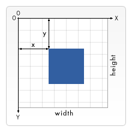
3.2 矩形の描画
<canvas>ネイティブでサポートされている図形描画は1つだけです：矩形。他のすべての図形は、少なくとも1つのパスを生成する必要があります (path)。しかし、複雑な図形の描画を可能にする多くのパス生成メソッドがあります。
canvas は矩形を描画するための3つのメソッドを提供します：
- 1、fillRect(x, y, width, height)：塗りつぶされた矩形を描画します。
- 2、strokeRect(x, y, width, height)：矩形の枠線を描画します。
- 3、clearRect(x, y, widh, height)：指定した矩形領域をクリアし、その領域は完全に透明になります。
説明：これら3つのメソッドは同じ引数を持ちます。
- x, y：矩形の左上隅の座標を示します。(canvasの座標原点に対する相対座標)
- width, height：描画する矩形の幅と高さを示します。


四、パスの描画 (path)
図形の基本要素はパスです。
パスは、異なる色や幅の線分や曲線で結ばれた、さまざまな形状の点の集合です。
1つのパス、さらには1つのサブパスもすべて閉じています。
パスを使用して図形を描画するには、いくつかの追加手順が必要です：
- パスの開始点を作成する
- 描画メソッドを呼び出してパスを描画する
- パスを閉じる
- パスが生成されたら、ストロークまたは塗りつぶしによってパス領域をレンダリングします。
以下は使用するメソッドです：
-
beginPath()新しいパスを作成します。パスが正常に作成されると、図形描画コマンドはパス上にポイントされ、パスが生成されます。
-
moveTo(x, y)ペンを指定の座標に移動します。
(x, y)。これはパスの開始点の座標を設定することに相当します。 -
closePath()パスを閉じた後、図形描画コマンドは再びコンテキストを指します。
-
stroke()線で図形の輪郭を描画します。
-
fill()パスの内容領域を塗りつぶすことで、中身の詰まった図形を生成します。
4.1 線分の描画
4.2 三角形の枠線の描画

4.3 三角形の塗りつぶし
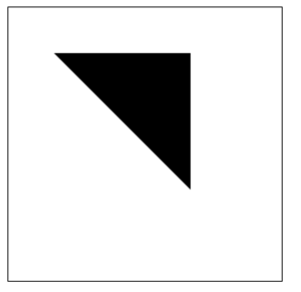
4.4 円弧の描画
円弧を描画するには2つのメソッドがあります：
1、arc(x, y, r, startAngle, endAngle, anticlockwise)：中心とし、(x, y)を中心とし、rを半径とし、startAngleラジアンからendAngleラジアンまで。anticlosewiseはブール値で、trueの場合は反時計回り、falseの場合は時計回りです（デフォルトは時計回り）。
注意：
ここでの度数はすべてラジアンです。
0ラジアンとは、x軸の正方向です。radians=(Math.PI/180)*degrees //角度转换成弧度
2、arcTo(x1, y1, x2, y2, radius)：指定された制御点と半径に基づいて円弧を描画し、最後に直線で2つの制御点を接続します。
円弧のケース1
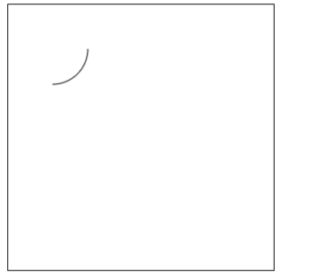
円弧のケース2
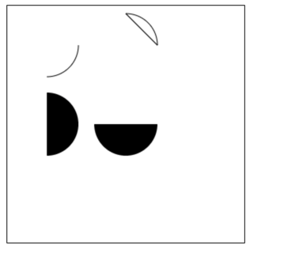
円弧のケース3

arcToメソッドの説明：
このメソッドは次のように理解できます。描画される円弧は2つの接線によって決まります。
1つ目の接線：開始点と制御点1によって決まる直線。
2つ目の接線：制御点1と制御点2によって決まる直線。
実際に描画される円弧は、これら2つの直線に接する円弧です。
4.5 ベジェ曲線の描画
4.5.1 ベジェ曲線とは
ベジェ曲線（Bézier curve）は、ベジエ曲線とも呼ばれ、2次元グラフィックスアプリケーションに応用される数学的な曲線です。
一般的なベクターグラフィックスソフトウェアはこれを使用して曲線を正確に描画します。ベジエ曲線は線分とノードで構成され、ノードはドラッグ可能な支点であり、線分は伸縮可能なゴムのようなものです。描画ツールで見られるペンツールは、このようなベクター曲線を描くためのものです。
ベジェ曲線はコンピュータグラフィックスにおいて非常に重要なパラメトリック曲線であり、比較的成熟したビットマップソフトウェアにもPhotoShopなどのベジェ曲線ツールがあります。Flash4には完全な曲線ツールがまだありませんでしたが、Flash5ではベジェ曲線ツールが提供されています。
ベジェ曲線は1962年にフランスの技術者ピエール・ベジェ（Pierre Bézier）によって広く発表され、彼はベジェ曲線を自動車のボディデザインに応用しました。ベジェ曲線は当初、Paul de Casteljau が1959年に de Casteljau アルゴリズムを用いて開発し、数値を安定させる方法でベジエ曲線を求めました。
1次ベジェ曲線は実際には直線です

2次ベジェ曲線
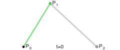

3次ベジェ曲線
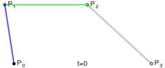

4.5.2 ベジェ曲線の描画
2次ベジェ曲線を描画する:
quadraticCurveTo(cp1x, cp1y, x, y)
説明：
- パラメータ1と2：制御点の座標
- パラメータ3と4：終了点の座標
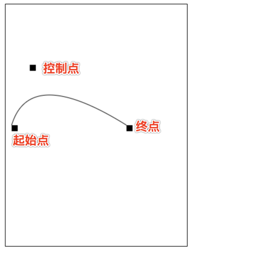
3次ベジェ曲線を描画する:
bezierCurveTo(cp1x, cp1y, cp2x, cp2y, x, y)
説明：
- パラメータ1と2：制御点1の座標
- パラメータ3と4：制御点2の座標
- パラメータ5と6：終了点の座標

五、スタイルと色の追加
前述の矩形描画の章では、デフォルトの線と色のみが使用されていました。
図形に色を付けたい場合、重要なプロパティが2つあります。
-
fillStyle = color図形の塗りつぶし色を設定します -
strokeStyle = color図形の輪郭の色を設定します
注記：
- 1. color は、CSSの色値を表す文字列、グラデーションオブジェクト、またはパターンオブジェクトにできます。
- 2. デフォルトでは、線と塗りつぶしの色はどちらも黒です。
- 3. 一度 strokeStyle または fillStyle の値を設定すると、その新しい値が新しく描画される図形のデフォルト値になります。各図形に異なる色を付けたい場合は、fillStyle または strokeStyle の値を再設定する必要があります。
fillStyle

strokeStyle
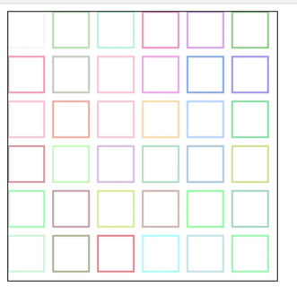
Transparency(透明度)
globalAlpha = transparencyValue：このプロパティはcanvas内のすべての図形の透明度に影響します。有効な値の範囲は0.0（完全に透明）から1.0（完全に不透明）で、デフォルトは1.0です。
globalAlphaこのプロパティは、同じ透明度を持つ多数の図形を描画する必要がある場合に非常に効率的です。ただし、rgba()を使用して透明度を設定する方がよいと思います。
1、line style
線の幅。正の値のみ指定できます。デフォルトは1.0です。
開始点と終点を結ぶ線を中心として、上下にそれぞれ線幅の半分が占めます。

2. lineCap = type
線の末端のスタイル。
3つの値があります：
-
butt：線分の末端が正方形で終わります -
round：線分の末端が円形で終わります square：線分の末端が正方形で終わりますが、幅が線分と同じで、高さが線の太さの半分の矩形領域が追加されます。var lineCaps = ["butt", "round", "square"]; for (var i = 0; i < 3; i++){ ctx.beginPath(); ctx.moveTo(20 + 30 * i, 30); ctx.lineTo(20 + 30 * i, 100); ctx.lineWidth = 20; ctx.lineCap = lineCaps[i]; ctx.stroke(); } ctx.beginPath(); ctx.moveTo(0, 30); ctx.lineTo(300, 30); ctx.moveTo(0, 100); ctx.lineTo(300, 100) ctx.strokeStyle = "red"; ctx.lineWidth = 1; ctx.stroke();
3. lineJoin = type
同じpath内で、線と線の接合部分のスタイルを設定します。
3つの値があります
round,bevel和miter：-
round接続部分の末端を中心とする追加の扇形を塗りつぶすことで、角の形状を描画します。角の丸みの半径は線分の幅です。 -
bevel接続部分の末端に、三角形を底とする追加の領域を塗りつぶします。各部分にはそれぞれ独立した矩形の角があります。 -
miter（デフォルト）接続部分の外側のエッジを延長して1点で交差させ、追加のひし形領域を形成します。function draw(){ var canvas = document.getElementById('tutorial'); if (!canvas.getContext) return; var ctx = canvas.getContext("2d"); var lineJoin = ['round', 'bevel', 'miter']; ctx.lineWidth = 20; for (var i = 0; i < lineJoin.length; i++){ ctx.lineJoin = lineJoin[i]; ctx.beginPath(); ctx.moveTo(50, 50 + i * 50); ctx.lineTo(100, 100 + i * 50); ctx.lineTo(150, 50 + i * 50); ctx.lineTo(200, 100 + i * 50); ctx.lineTo(250, 50 + i * 50); ctx.stroke(); } } draw(); -
fillText(text, x, y [, maxWidth])指定された(x,y)位置に指定されたテキストを塗りつぶします。描画する最大幅はオプションです。 -
strokeText(text, x, y [, maxWidth])指定された(x,y)位置にテキストの枠線を描画します。描画する最大幅はオプションです。var ctx; function draw(){ var canvas = document.getElementById('tutorial'); if (!canvas.getContext) return; ctx = canvas.getContext("2d"); ctx.font = "100px sans-serif" ctx.fillText("天に情があれば", 10, 100); ctx.strokeText("天に情があれば", 10, 200) } draw(); -
font = value現在テキストの描画に使用するスタイルです。この文字列は、CSS font属性と同じ構文を使用します。デフォルトのフォントは10px sans-serif。 -
textAlign = valueテキストの配置オプション。指定可能な値は次のとおりです：start,end,left,rightorcenter。デフォルト値はstart。 -
textBaseline = valueベースラインの配置オプション。指定可能な値は次のとおりです：top,hanging,middle,alphabetic,ideographic,bottom。デフォルト値はalphabetic。。 -
direction = valueテキストの方向。可能な値は次のとおりです：ltr,rtl,inherit。デフォルト値はinherit。 -
現在適用されている変形（すなわち移動、回転、拡大縮小）
-
strokeStyle,fillStyle,globalAlpha,lineWidth,lineCap,lineJoin,miterLimit,shadowOffsetX,shadowOffsetY,shadowBlur,shadowColor,globalCompositeOperation 的值 -
現在のクリッピングパス（
clipping path）
任意の回数呼び出すことができます
saveメソッド（配列のpush())。 - a (m11): Horizontal scaling.
- b (m12): Horizontal skewing.
- c (m21): Vertical skewing.
- d (m22): Vertical scaling.
- e (dx): Horizontal moving.
- f (dy): Vertical moving.
クリア
canvas各フレームのアニメーションを描画する前に、すべてをクリアする必要があります。すべてをクリアする最も簡単な方法はclearRect()メソッドです。保存
canvas状態描画の過程で変更する場合、canvasの状態（色、座標原点の移動など）を変更し、各フレームを元の状態から描画する場合は、保存しておくのが最善ですcanvasの状態アニメーションの図形を描画しますこのステップが実際のアニメーションフレームの描画です
復元
canvas状態前に保存した場合は、canvas状態は、1フレームの描画完了後に復元する必要がありますcanvas状態。setInterval()setTimeout()requestAnimationFrame()

4. 破線
用
setLineDashメソッドとlineDashOffset属性を使用して破線のスタイルを指定します。setLineDashこのメソッドは配列を受け取り、線分と間隔の交互を指定します。lineDashOffsetこの属性は開始オフセットを設定します。function draw(){ var canvas = document.getElementById('tutorial'); if (!canvas.getContext) return; var ctx = canvas.getContext("2d"); ctx.setLineDash([20, 5]); //[実線の長さ, 間隔の長さ] ctx.lineDashOffset = -0; ctx.strokeRect(50, 50, 210, 210); } draw();
注記： getLineDash() は、現在の破線スタイルを含む、長さが非負の偶数の配列を返します。
六、テキストの描画
テキストを描画する2つのメソッド
canvasはテキストをレンダリングする2つのメソッドを提供します：

テキストにスタイルを追加する
七、画像の描画
私たちはまた、
canvas上に直接画像を描画できます。7.1 ゼロから画像を作成する
var img = new Image(); //<img>要素を作成します img.src = 'myImage.png'; //画像のソースアドレスを設定しますスクリプト実行後、画像の読み込みが開始されます。
描画
img// 参数 1：要绘制的 img // 参数 2、3：绘制的 img 在 canvas 中的坐标 ctx.drawImage(img,0,0);
注意：画像がネットワークから読み込まれることを考慮すると、もし
drawImageの時、画像が完全に読み込まれていない場合は何も行われず、一部のブラウザでは例外が発生します。したがって、img描画が完了した後にdrawImage。var img = new Image(); //img要素を作成します img.onload = function(){ ctx.drawImage(img, 0, 0) } img.src = 'myImage.png'; //画像のソースアドレスを設定します7.2 描画
imgタグ要素内の画像
imgできますnewまた、ページ内の<img>タグから取得することもできます。<img src="./美女.jpg" alt="" width="300"><br> <canvas id="tutorial" width="600" height="400"></canvas> function draw(){ var canvas = document.getElementById('tutorial'); if (!canvas.getContext) return; var ctx = canvas.getContext("2d"); var img = document.querySelector("img"); ctx.drawImage(img, 0, 0); } document.querySelector("img").onclick = function (){ draw(); }1番目の画像はページ内の
<img>タグです：
7.3 画像の拡大縮小
drawImage()さらに2つのパラメータを追加することもできます：drawImage(image, x, y, width, height)
このメソッドにはパラメータが2つ追加されています：
width和heightこれらの2つのパラメータは、canvas に描画するときに拡大・縮小するサイズを制御するために使われます。ctx.drawImage(img, 0, 0, 400, 200)

7.4 スライス
drawImage(image, sx, sy, sWidth, sHeight, dx, dy, dWidth, dHeight)
最初のパラメータは他と同じで、画像または別の canvas の参照です。
他の8つのパラメータ：
最初の4つは画像ソースのスライス位置とサイズを定義し、後の4つはスライスのターゲット表示位置とサイズを定義します。
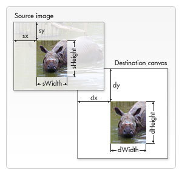
八、状態の保存と復元
Saving and restoring state複雑な図形を描画する際に欠かせない操作です。save()和restore()save和restoreメソッドは保存と復元に使用されます。canvas状態のためのもので、どちらもパラメータはありません。
Canvas状態とは、現在のキャンバスに適用されているすべてのスタイルと変形のスナップショットです。1、save() について：Canvas の状態はスタックに保存され、save() メソッドが呼び出されるたびに、現在の状態がスタックにプッシュされて保存されます。
1つの描画状態には次のものが含まれます：
任意の回数呼び出すことができます
saveメソッド（配列のpush())。2、restore() について：restore メソッドを呼び出すたびに、最後に保存された状態がスタックからポップされ、すべての設定が復元されます（配列の
pop())。var ctx; function draw(){ var canvas = document.getElementById('tutorial'); if (!canvas.getContext) return; var ctx = canvas.getContext("2d"); ctx.fillRect(0, 0, 150, 150); //デフォルト設定で矩形を描画します ctx.save(); //デフォルト状態を保存します ctx.fillStyle = 'red' //元の設定に基づいて色を変更します ctx.fillRect(15, 15, 120, 120); //新しい設定で矩形を描画します ctx.save(); //現在の状態を保存します ctx.fillStyle = '#FFF' //再度色設定を変更します ctx.fillRect(30, 30, 90, 90); //新しい設定で矩形を描画します ctx.restore(); //以前の色状態を再読み込みします ctx.fillRect(45, 45, 60, 60); //直前の設定で矩形を描画します ctx.restore(); //デフォルトの色設定を読み込みます ctx.fillRect(60, 60, 30, 30); //読み込んだ設定で矩形を描画します } draw();
九、変形
9.1 translate
translate(x, y)移動に使用します
canvas的原点指定された位置へ
translateメソッドは2つのパラメータを受け取ります。xは左右のオフセット量、yは上下のオフセット量です。右図のとおりです。変形を行う前に状態を保存しておくことは良い習慣です。ほとんどの場合、
restoreメソッドを呼び出す方が、手動で元の状態を復元するよりはるかに簡単です。また、ループ内で移動を行っても状態を保存および復元しないと、canvasその状態は、最終的には一部のものが見えなくなっていることに気づくかもしれません。それはおそらくcanvas範囲外になってしまったからです。注意：
translate移動するのはcanvasの座標原点です（座標変換）。 var ctx; function draw(){ var canvas = document.getElementById('tutorial1'); if (!canvas.getContext) return; var ctx = canvas.getContext("2d"); ctx.save(); //原点を移動する前の状態を保存します ctx.translate(100, 100); ctx.strokeRect(0, 0, 100, 100) ctx.restore(); //最初の状態に復元します ctx.translate(220, 220); ctx.fillRect(0, 0, 100, 100) } draw();
var ctx; function draw(){ var canvas = document.getElementById('tutorial1'); if (!canvas.getContext) return; var ctx = canvas.getContext("2d"); ctx.save(); //原点を移動する前の状態を保存します ctx.translate(100, 100); ctx.strokeRect(0, 0, 100, 100) ctx.restore(); //最初の状態に復元します ctx.translate(220, 220); ctx.fillRect(0, 0, 100, 100) } draw();
9.2 rotate
rotate(angle)
座標軸を回転させます。
このメソッドは1つのパラメータだけを受け取ります：回転角度(angle)です。これは時計回りの方向で、ラジアン単位の値です。
回転の中心は座標原点です。
 var ctx; function draw(){ var canvas = document.getElementById('tutorial1'); if (!canvas.getContext) return; var ctx = canvas.getContext("2d"); ctx.fillStyle = "red"; ctx.save(); ctx.translate(100, 100); ctx.rotate(Math.PI / 180 * 45); ctx.fillStyle = "blue"; ctx.fillRect(0, 0, 100, 100); ctx.restore(); ctx.save(); ctx.translate(0, 0); ctx.fillRect(0, 0, 50, 50) ctx.restore(); } draw();
var ctx; function draw(){ var canvas = document.getElementById('tutorial1'); if (!canvas.getContext) return; var ctx = canvas.getContext("2d"); ctx.fillStyle = "red"; ctx.save(); ctx.translate(100, 100); ctx.rotate(Math.PI / 180 * 45); ctx.fillStyle = "blue"; ctx.fillRect(0, 0, 100, 100); ctx.restore(); ctx.save(); ctx.translate(0, 0); ctx.fillRect(0, 0, 50, 50) ctx.restore(); } draw();
9.3 scale
scale(x, y)
これを使って図形の
canvas内のピクセル数を増減し、形状やビットマップを縮小または拡大します。scaleメソッドは2つのパラメータを受け取ります。x,yそれぞれ横軸と縦軸のスケール係数で、どちらも正の値でなければなりません。1.0 より小さいと縮小、1.0 より大きいと拡大、1.0 の場合は何の効果もありません。デフォルトでは、
canvasの1単位は1ピクセルです。例えば、スケール係数を0.5に設定すると、1単位が0.5ピクセルに対応するようになり、描画される形状は元の半分になります。同様に、2.0に設定すると、1単位が2ピクセルに対応し、描画結果は図形が2倍に拡大されます。9.4 transform (変形行列)
transform(a, b, c, d, e, f)
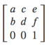
var ctx; function draw(){ var canvas = document.getElementById('tutorial1'); if (!canvas.getContext) return; var ctx = canvas.getContext("2d"); ctx.transform(1, 1, 0, 1, 0, 0); ctx.fillRect(0, 0, 100, 100); } draw();
十、合成
これまでのすべての例では、常に1つの図形を別の図形の上に描画していました。しかし、それ以外の多くの場合、これだけでは不十分です。例えば、合成された図形では、描画順序に制限があります。ただし、globalCompositeOperation プロパティを利用することで、この状況を変えることができます。
globalCompositeOperation = type
var ctx; function draw(){ var canvas = document.getElementById('tutorial1'); if (!canvas.getContext) return; var ctx = canvas.getContext("2d"); ctx.fillStyle = "blue"; ctx.fillRect(0, 0, 200, 200); ctx.globalCompositeOperation = "source-over"; //グローバル合成操作 ctx.fillStyle = "red"; ctx.fillRect(100, 100, 200, 200); } draw();注：以下の例では、青は元の図形、赤は新しい図形です。
type は以下の13種類の文字列値のいずれかです：
1、これはデフォルト設定で、新しい画像が元の画像の上に重なります。

2. source-in
新しい画像と元の画像が重なる部分だけが表示され、その他の領域はすべて透明になります。（他の古い画像の領域も透明になります）
3. source-out
新しい画像と古い画像が重ならない部分だけを表示し、残りの部分はすべて透明になります。（古い画像も表示されません）

4. source-atop
新しい画像は古い画像と重なる領域だけが表示されます。古い画像は引き続き表示されます。
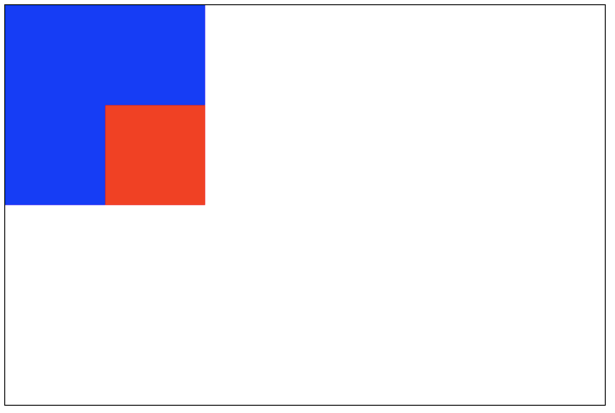
5. destination-over
新しい画像は古い画像の下に表示されます。

6. destination-in
新旧の画像が重なる部分の古い画像だけが表示され、その他の領域はすべて透明になります。

7. destination-out
古い画像と新しい画像が重ならない部分だけです。表示されるのは古い画像の一部の領域であることに注意してください。
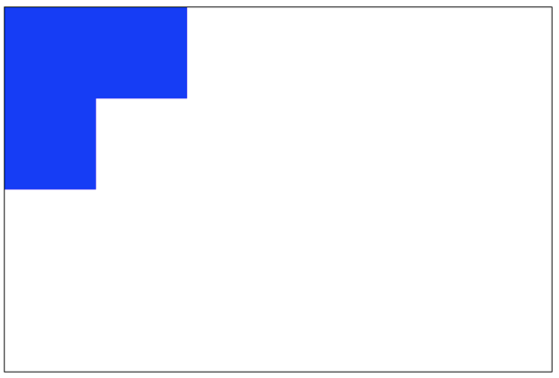
8. destination-atop
古い画像は重なる部分だけが表示され、新しい画像は古い画像の下に表示されます。
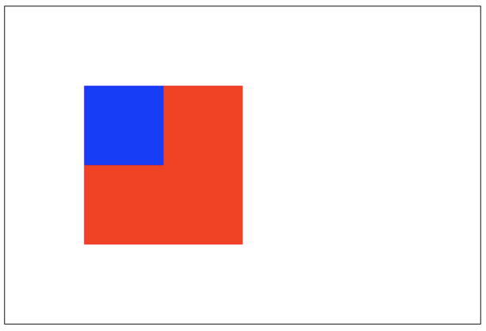
9. lighter
新旧の画像が両方表示されますが、重なる領域の色は加算処理されます。

10. darken
重なる部分の最も黒いピクセルが保持されます。（各色ビットを比較して最小値を取得します）
blue: #0000ff red: #ff0000
したがって、重なる部分の色は：#000000。

11. lighten
重なる部分の最も明るいピクセルが保証されます。（各色ビットを比較して最大値を取得します）
blue: #0000ff red: #ff0000
したがって、重なる部分の色は：#ff00ff。
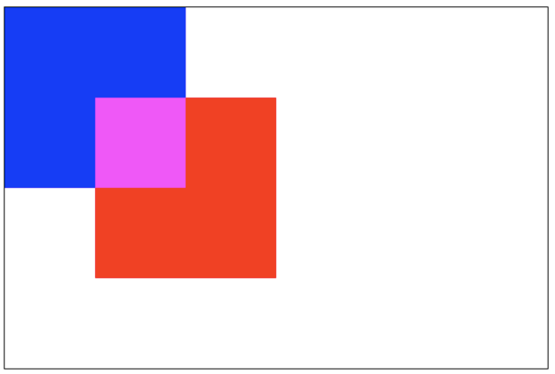
12. xor
重なる部分は透明になります。

13. copy
新しい画像だけが保持され、その他はすべてクリアされます（透明になります）。
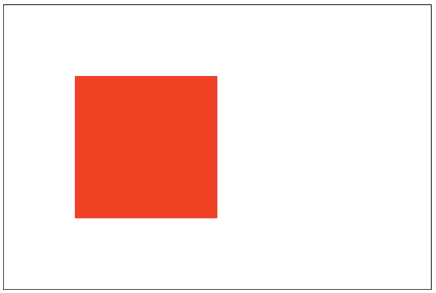
十一、クリッピングパス
clip()
作成済みのパスをクリッピングパスに変換します。
クリッピングパスの役割はマスクです。クリッピングパス内の領域だけが表示され、クリッピングパス外の領域は非表示になります。
注意：clip() は、このメソッドの呼び出し後に描画された画像だけをマスクできます。clip() メソッドの呼び出しより前に描画された画像はマスクできません。
 var ctx; function draw(){ var canvas = document.getElementById('tutorial1'); if (!canvas.getContext) return; var ctx = canvas.getContext("2d"); ctx.beginPath(); ctx.arc(20,20, 100, 0, Math.PI * 2); ctx.clip(); ctx.fillStyle = "pink"; ctx.fillRect(20, 20, 100,100); } draw();
var ctx; function draw(){ var canvas = document.getElementById('tutorial1'); if (!canvas.getContext) return; var ctx = canvas.getContext("2d"); ctx.beginPath(); ctx.arc(20,20, 100, 0, Math.PI * 2); ctx.clip(); ctx.fillStyle = "pink"; ctx.fillRect(20, 20, 100,100); } draw();
十二、アニメーション
アニメーションの基本手順
アニメーションの制御
私たちは
canvasのメソッドまたは独自のメソッドを使って画像をcanvas上に描画できます。通常、描画結果が見えるのはスクリプトの実行が終了した後です。例えば、forループの内部でアニメーションを完了させることはできません。つまり、アニメーションを実行するには、定期的に再描画を実行できるメソッドが必要です。
一般的には次の3つのメソッドが使われます：
ケース1：太陽系
let sun; let earth; let moon; let ctx; function init(){ sun = new Image(); earth = new Image(); moon = new Image(); sun.src = "sun.png"; earth.src = "earth.png"; moon.src = "moon.png"; let canvas = document.querySelector("#solar"); ctx = canvas.getContext("2d"); sun.onload = function (){ draw() } } init(); function draw(){ ctx.clearRect(0, 0, 300, 300); //すべての内容をクリアします /*太陽を描画します*/ ctx.drawImage(sun, 0, 0, 300, 300); ctx.save(); ctx.translate(150, 150); //earth（地球）の軌道を描画します ctx.beginPath(); ctx.strokeStyle = "rgba(255,255,0,0.5)"; ctx.arc(0, 0, 100, 0, 2 * Math.PI) ctx.stroke() let time = new Date(); //地球を描画します ctx.rotate(2 * Math.PI / 60 * time.getSeconds() + 2 * Math.PI / 60000 * time.getMilliseconds()) ctx.translate(100, 0); ctx.drawImage(earth, -12, -12) //月の軌道を描画します ctx.beginPath(); ctx.strokeStyle = "rgba(255,255,255,.3)"; ctx.arc(0, 0, 40, 0, 2 * Math.PI); ctx.stroke(); //月を描画します ctx.rotate(2 * Math.PI / 6 * time.getSeconds() + 2 * Math.PI / 6000 * time.getMilliseconds()); ctx.translate(40, 0); ctx.drawImage(moon, -3.5, -3.5); ctx.restore(); requestAnimationFrame(draw); }
ケース2：アナログ時計
init(); function init(){ let canvas = document.querySelector("#solar"); let ctx = canvas.getContext("2d"); draw(ctx); } function draw(ctx){ requestAnimationFrame(function step(){ drawDial(ctx); //文字盤を描画します drawAllHands(ctx); //時針・分針・秒針を描画します requestAnimationFrame(step); }); } /*時針・分針・秒針を描画します*/ function drawAllHands(ctx){ let time = new Date(); let s = time.getSeconds(); let m = time.getMinutes(); let h = time.getHours(); let pi = Math.PI; let secondAngle = pi / 180 * 6 * s; //秒針のラジアン角を計算します let minuteAngle = pi / 180 * 6 * m + secondAngle / 60; //分針のラジアン角を計算します let hourAngle = pi / 180 * 30 * h + minuteAngle / 12; //時針のラジアン角を計算します drawHand(hourAngle, 60, 6, "red", ctx); //時針を描画します drawHand(minuteAngle, 106, 4, "green", ctx); //分針を描画します drawHand(secondAngle, 129, 2, "blue", ctx); //秒針を描画します } /*時針、分針、または秒針を描画します * パラメータ1：描画する針の角度 * パラメータ2：描画する針の長さ * パラメータ3：描画する針の幅 * パラメータ4：描画する針の色 * パラメータ4：ctx **/ function drawHand(angle, len, width, color, ctx){ ctx.save(); ctx.translate(150, 150); //座標軸の原点を元の中心に平行移動します ctx.rotate(-Math.PI / 2 + angle); //座標軸を回転させます。x軸が針の角度になります ctx.beginPath(); ctx.moveTo(-4, 0); ctx.lineTo(len, 0); //x軸に沿って針を描画します ctx.lineWidth = width; ctx.strokeStyle = color; ctx.lineCap = "round"; ctx.stroke(); ctx.closePath(); ctx.restore(); } /*文字盤を描画します*/ function drawDial(ctx){ let pi = Math.PI; ctx.clearRect(0, 0, 300, 300); //すべての内容をクリアします ctx.save(); ctx.translate(150, 150); //座標原点を元の中心に移動します ctx.beginPath(); ctx.arc(0, 0, 148, 0, 2 * pi); //円周を描画します ctx.stroke(); ctx.closePath(); for (let i = 0; i < 60; i++){//目盛りを描画します。 ctx.save(); ctx.rotate(-pi / 2 + i * pi / 30); //座標軸を回転させます。座標軸のxの正の方向は上から始まります ctx.beginPath(); ctx.moveTo(110, 0); ctx.lineTo(140, 0); ctx.lineWidth = i % 5 ? 2 : 4; ctx.strokeStyle = i % 5 ? "blue" : "red"; ctx.stroke(); ctx.closePath(); ctx.restore(); } ctx.restore(); }
試してみる »
原文著者：做人要厚道2013
原文アドレス：https://blog.csdn.net/u012468376/article/details/73350998
-
クリックしてノートを共有
<p style="font-size:14px;">ノートはこの記事の内容を拡張したものでなければなりません！</p><br> <p style="font-size:12px;"><a href="../tougao.html" target="_blank">記事の投稿は、こちらをクリックしてください</a></p> <p style="font-size:14px;"><a href="./runoob-user-test-intro.html" target="_blank">登録招待コードの取得方法</a></p> <h3 class="text-muted"><i class="fa fa-info-circle" aria-hidden="true"></i> ノートを共有する前に<a href=".." class="runoob-pop">ログイン</a>が必要です！</h3> <p><a href="./runoob-user-test-intro.html" target="_blank">登録招待コードの取得方法</a></p>